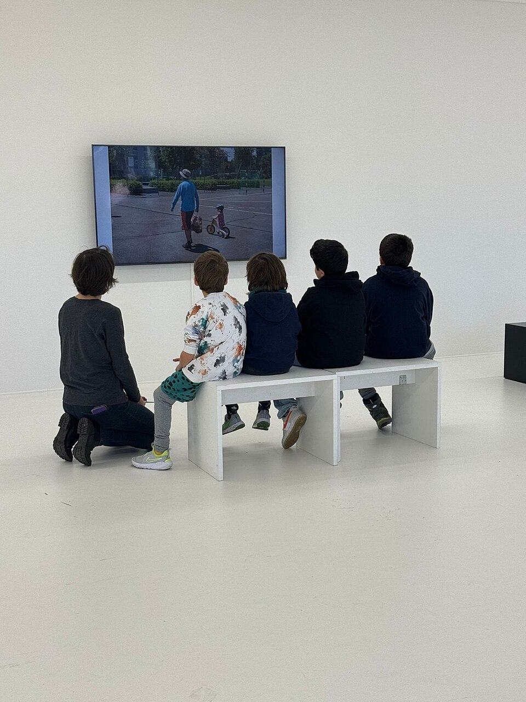
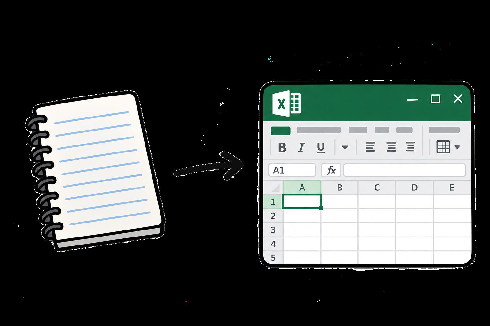

1. Smysl technologií a digitálních nástrojů ve výuce

V pedagogické praxi bývá digitální technologie mnohdy vnímána nekriticky jako automatické vylepšení výuky. Skutečné didaktické mistrovství však spočívá v rozpoznání okamžiku, kdy technologie reálně rozvíjí myšlení a kdy naopak vnáší do hodiny zbytečné kognitivní zahlcení.
Jak uvádí odborná konzultantka Eva Fanfulová v rozhovoru pro Národní pedagogický institut České republiky (NPI ČR), digitální nástroje mají nejvyšší hodnotu tehdy, když žáky zbavují zdlouhavé mechanické rutiny ve prospěch konceptuálního zkoumání:
„V aplikačním softwaru pro matematiku mohou žáci dělat věci, které doteď rýsovali ručně. Například u grafu na přímou úměrnost si mohou udělat víc pokusů, aby viděli, jak se přímka pohybuje. A možná právě přes tento nástroj víc pochopí, jak se s koeficientem mění úhel sklonu. Kdyby to dělali ručně, soustředí se na vlastní rýsování, nakreslí sotva dva grafy a nepochopí nic. V aplikaci si mohou během pár minut udělat několik změn, které názorně ilustrují, jak celá úměrnost funguje,“ vysvětluje Fanfulová.
2. Principy versus nadrilované postupy

Zdroj obrázku: OpenAI. (2026). cartoon style image of a paper notebook with a short arrow pointing at an open window of excel AI-generated image. ChatGPT. Dostupné z: chatgpt.com.
Znát základní princip je podle Evy Fanfulové klíčové i pro aplikace do dalších oborů. Je to dokonce podstatně důležitější než znát konkrétní nástroj či aplikaci.
„Pokud rozumím principu, mohu použít různé nástroje, například místo Excelu jiný tabulkový procesor. Nejde o nástroj, ale o účel použití.“
Pokud vzdělávání ustrne na pouhém nácviku klikání v konkrétním uživatelském rozhraní (např. ‚klikněte na záložku X a ikonu Y‘), získaná dovednost má velmi krátkou životnost. Koneckonců s každou aktualizací se konkrétní nástroje trochu mění, takže nadrilovat si určitý postup bez porozumění dlouho nevydrží.
Naopak žák, který pochopí princip relativního a absolutního adresování ($A$1 vs. A1), logiku matematických vzorců a toky dat, dokáže tento myšlenkový model okamžitě aplikovat v Microsoft Excelu, Google Tabulkách, LibreOffice Calc i Apple Numbers.
3. Klíčové zásady smysluplné digitalizace výuky
Z analýzy digitálních postupů a doporučení odborníků lze vyvodit čtyři základní didaktické zásady:
- Účelnost před samoúčelností: Technologie je zesilovačem pedagogického záměru, nikoliv samostatným cílem. Volíme ji výhradně tehdy, přináší-li prokazatelnou didaktickou přidanou hodnotu (dynamická vizualizace, rychlé experimentování, okamžitá zpětná vazba).
- Konceptuální porozumění před mechanickým drillem: Žák musí chápat, jaký proces v datech či výpočtu probíhá, nikoliv mechanicky memorovat křehkou posloupnost kliknutí myší.
- Přenositelnost a technologická agnostičnost: Znalost obecných principů umožňuje okamžitou adaptaci mezi konkurenčními platformami, operačními systémy i budoucími softwarovými verzemi.
- Kritické porovnání analogového a digitálního přístupu: Schopnost vědomě zvolit tužku a papír v situacích, kdy manuální práce přináší hlubší soustředění, hmatové ukotvení či méně kognitivního rozptýlení.
4. Od grafického plakátu k přístupnému webovému dokumentu
Tato HTML stránka představuje autentickou transformaci grafického plakátu, který byl původně navržen ve Figmě a v minulé hodině (08. 10. 2026) exportován do formátu PDF. Automatické konvertory (jako např. pdf2htmlEX) sice dokáží vygenerovat vizuální shodu, ale jejich kód je plný absolutních pozic, nečitelný pro čtečky obrazovky a nepoužitelný na mobilních zařízeních. Ruční sémantická konverze naopak nabízí plnohodnotný, přístupný a typograficky čistý výukový materiál.
Původní grafický artefakt
Můžete si prohlédnout původní grafický plakát ve formátu PDF a porovnat grafické rozložení s touto webovou implementací.
Prohlášení a vyhodnocení využití umělé inteligence (AI)
V souladu s etickými standardy akademické integrity a pokyny k vypracování úkolu transparentně uvádím zapojení nástrojů umělé inteligence v této stránce:
-
Vizuální obsah vytvořený pomocí AI: Kreslená ilustrace sešitu s šipkou směřující k oknu Excelu (
assets/notebook_to_excel.jpg) byla vygenerována modelem OpenAI ChatGPT (DALL-E) na základě promptu: „cartoon style image of a paper notebook with a short arrow pointing at an open window of excel“. Slouží jako didaktická metafora přechodu z analogového do digitálního prostředí a je zřetelně označena štítkem u obrázku i v citacích. - Asistence při kódování a sémantickém strukturování: Sémantický kód HTML5, úprava přístupnosti (WCAG), responzivní obtékání obrázků a typografické doplnění nezlomitelných mezer byly vytvořeny ve vývojovém prostředí Google Antigravity. Textový obsah vychází z odborného rozhovoru publikovaného Národním pedagogickým institutem ČR.
5. Bibliografické citace a zdroje
- KRAMULOVÁ, Daniela. Podpora středních odborných škol v procesu digitalizace. Online. HTTPS://WWW.NPI.CZ/. Národní pedagogický institut České republiky, 2025. Dostupné z: https://digitalizace.rvp.cz/clanky/podpora-sov-v-procesu-digitalizace. [cit. 2026-10-05].
- MaddaMom. (2024, February 3). Helmhaus Zurich – Group interaction with multimedia stories [Photograph]. Wikimedia Commons. Dostupné z: https://commons.wikimedia.org/wiki/File:Helmhaus_Zurich_–_Group_interaction_with_multimedia_stories.jpg.
- OpenAI. (2026). cartoon style image of a paper notebook with a short arrow pointing at an open window of excel [AI-generated image]. ChatGPT. Dostupné z: https://chatgpt.com.
- Yuttapong Lineal. (n.d.). Speak [Icon]. Flaticon. Dostupné z: https://www.flaticon.com/free-icon/speak_1247944.